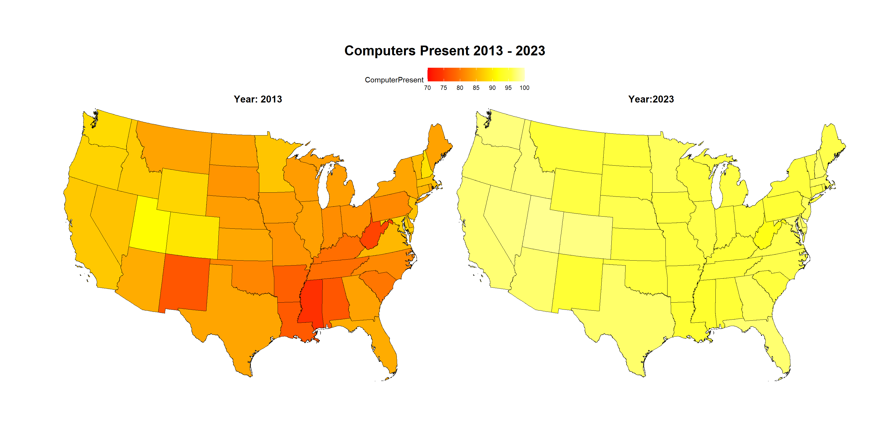

library(data.table)
library(jsonlite)
library(httr)
library(usmap)
library(purrr)
library(sf)
library(ggplot2)
library(RColorBrewer)
library(magrittr)
library(here)
library(kableExtra)
library(devtools)1 Introduction
Accessing the US Census Bureau’s database of survey data and map geometries via their API can be a challenge. The R package RcensusPkg can help by providing specific functions for checking on the availability of geographies, variables, datasets, and dates. In addition, the package provides easy access to the Bureau’s extensive Tiger Line map geometries and for joining the maps with Census Bureau survey data. Presented here is a basic step-by-step demonstration of how RcensusPkg could be applied. The example compares the percentage of computer presence across the states in 2013 with 2023. A series of highlighted ‘tasks’ are presented with steps to download the data, download the state geometries, join data with the state boundary geometries and finally create a choropleth states map visualization. The companion packages RspatialPkg and RplotterPkg are ggplot2 based R packages that create and map the visualization. As the researcher gains more knowledge of his/her subject, not all of the steps outlined here will be required.
RcensusPkg is available for installation from deandevl github website. There are many additional demonstrations on the package at the RcensusPkg’s demo folder. Each function is demonstrated for downloading data and simple feature (sf) geometries. For additional applications see Techniques in Acquisition, Computation, and Display of US Census Bureau Data which uses RcensusPkg to follow the first nine chapters of Kyle Walker’s book Analyzing US Census Data: Methods, Maps, and Models in R.
2 Setup
Let’s load the required R script libraries from CRAN and github:
2.1 Load the Required R Packages from CRAN:
2.2 Load the Required R Packages from GitHub:
devtools::install_github("deandevl/RcensusPkg")
devtools::install_github("deandevl/RspatialPkg")
devtools::install_github("deandevl/RplotterPkg")2.3 Formulate a goal
Our first task is to:
Formulate a goal that characterizes the types of variables and maps needed.
Our goal is to get Census Bureau annual survey percentages on computer ownership in households across the states. We want a recent year like 2023 and compare it with an earlier year such as 2013.
2.4 Find the dataset and variable acronym name used by the Census Bureau API
We are starting from ground zero where we know little about the availability of Census Bureau data or how to access it and put it together. So our next task is to:
Do a general search at the US Census Bureau’s site to identify possible dataset sources.
An excellent place to start are the brief descriptions of all the Census Bureau API datasets. In addition, there is the Census Bureau’s Explorer with a column of filters on the far left and a list of Tables. The datasets such as the “American Community Survey” contain several Tables and Tables contain several data variables. Our goal is to find the dataset acronym that has computer related variables.
Using Explorer we see a “American Community Survey” dataset with a table named “DP02 Selected Social Characteristics in the United States”. When we click the link for the DP02 Table we get a listing of variables. As we scroll down the listing, you will find at the very end a sub-category “COMPUTERS AND INTERNET USE”. Two variables under the category have numbers for households “With a computer” and “With a broadband internet subscription”. We also see back toward the top of the page the name of the dataset as “American Community Survey” and the title “2023 ACS 1-Year Estimates Data Profiles”. It appears that this dataset and its title are what we are looking for.
Also at the top of the page is a note “American Community Survey 1-Year estimates are published for geographies with a population of 65,000 or more.” Since we will be using US state geographies, our percentage estimates should be accurate.
So we have a title, “2023 ACS 1-Year Estimates Data Profiles” under the “American Community Survey” dataset and a table (i.e. DP02) with our computer related variables. Our next task then:
Determine the acronym that the Census Bureau API uses for the dataset “ACS 1-Year Estimates Data Profiles”.
To find the acronym we can use RcensusPkg::get_dataset_names() which returns a dataframe of dataset names. It has a parameter filter_title_str that filters the names by their title. So return all dataset names containing the “1-Year” string for all years/vintages:
acs_dataset_names_lst <- RcensusPkg::get_dataset_names(
filter_title_str = "1-year"
)| name | vintage | title |
|---|---|---|
| acs/acs1/profile | 2013 | ACS 1-Year Data Profiles |
| acs/acs1/profile | 2014 | ACS 1-Year Data Profiles |
| acs/acs1/profile | 2015 | ACS 1-Year Data Profiles |
| acs/acs1/profile | 2016 | ACS 1-Year Data Profiles |
| acs/acs1/profile | 2017 | ACS 1-Year Data Profiles |
| acs/acs1/profile | 2018 | ACS 1-Year Profile Tables |
| acs/acs1/profile | 2019 | American Community Survey: 1-Year Estimates: Data Profiles 1-Year |
| acs/acs1/profile | 2021 | American Community Survey: 1-Year Estimates: Data Profiles 1-Year |
| acs/acs1/profile | 2022 | American Community Survey: 1-Year Estimates: Data Profiles 1-Year |
| acs/acs1/profile | 2023 | ACS 1-Year Data Profiles |
Among the “1-Year” surveys we find that the acronym name “acs/acs1/profile” has extensive years including our target years of 2013 and 2023.
With the dataset acronym name we now need to find the acronym for the “With a computer” variable under the “DP02 Selected Social Characteristics in the United States” table:
Find the Census Bureau API’s acronym name for “With a computer” variable for 2023.
To find the acronym we can use RcensusPkg::get_variable_names() which returns a dataframe of filtered variables under a specific dataset and year(vintage) for a label or phrase such as “computers”.
DP02_2023_computers_dt <- RcensusPkg::get_variable_names(
dataset = "acs/acs1/profile",
vintage = 2023,
filter_label_str = "computers"
)| name | label | concept | required | predicateType |
|---|---|---|---|---|
| DP02_0152E | Estimate!!COMPUTERS AND INTERNET USE!!Total households | Selected Social Characteristics in the United States | NA | int |
| DP02_0152PE | Percent!!COMPUTERS AND INTERNET USE!!Total households | Selected Social Characteristics in the United States | NA | int |
| DP02_0153E | Estimate!!COMPUTERS AND INTERNET USE!!Total households!!With a computer | Selected Social Characteristics in the United States | NA | int |
| DP02_0153PE | Percent!!COMPUTERS AND INTERNET USE!!Total households!!With a computer | Selected Social Characteristics in the United States | NA | float |
| DP02_0154E | Estimate!!COMPUTERS AND INTERNET USE!!Total households!!With a broadband Internet subscription | Selected Social Characteristics in the United States | NA | int |
| DP02_0154PE | Percent!!COMPUTERS AND INTERNET USE!!Total households!!With a broadband Internet subscription | Selected Social Characteristics in the United States | NA | float |
From the “concept” column we find “Percent!!COMPUTERS AND INTERNET USE!!Total households!!With a computer” and variable acronym of “DP02_0153PE”
Because the acronym names can change over time we need to check on the variable name for 2013.
Find the Census Bureau API’s acronym name for “With a computer” variable for 2013.
DP02_2013_computers_dt <- RcensusPkg::get_variable_names(
dataset = "acs/acs1/profile",
vintage = 2013,
filter_label_str = "computers"
)| name | label | concept | required | predicateType |
|---|---|---|---|---|
| DP02_0150E | Estimate!!COMPUTERS AND INTERNET USE!!Total Households | SELECTED SOCIAL CHARACTERISTICS IN THE UNITED STATES | NA | int |
| DP02_0150PE | Percent!!COMPUTERS AND INTERNET USE!!Total Households | SELECTED SOCIAL CHARACTERISTICS IN THE UNITED STATES | NA | int |
| DP02_0151E | Estimate!!COMPUTERS AND INTERNET USE!!Total Households!!With a computer | SELECTED SOCIAL CHARACTERISTICS IN THE UNITED STATES | NA | int |
| DP02_0151PE | Percent!!COMPUTERS AND INTERNET USE!!Total Households!!With a computer | SELECTED SOCIAL CHARACTERISTICS IN THE UNITED STATES | NA | float |
| DP02_0152E | Estimate!!COMPUTERS AND INTERNET USE!!Total Households!!With a broadband Internet subscription | SELECTED SOCIAL CHARACTERISTICS IN THE UNITED STATES | NA | int |
| DP02_0152PE | Percent!!COMPUTERS AND INTERNET USE!!Total Households!!With a broadband Internet subscription | SELECTED SOCIAL CHARACTERISTICS IN THE UNITED STATES | NA | float |
We obtain similar results but the variable acronym has changed! For 2013 we have “DP02_0151PE”.
2.5 Check that the geography is available in the dataset
Datasets can break down the estimates in any number of geography boundaries such as state, county, tract, block, zip code area. We need to make sure that our target of state boundaries is available for the “acs/acs1/profile” dataset.
Check the availability of state geography from the “acs/acs1/profile” dataset.
We can use RcensusPkg::get_geography() to check if “state” for the dataset and vintage combination is available.
acs1_2023_geo_dt <- RcensusPkg::get_geography(
dataset = "acs/acs1/profile",
vintage = 2023
)| name | geoLevelDisplay |
|---|---|
| us | 010 |
| region | 020 |
| division | 030 |
| state | 040 |
| county | 050 |
| county subdivision | 060 |
The resultant dataframe does have an entry for “state” under the “name” column.
3 Download the data
We have the years and acronym names for the dataset and variable. We’re all set to make a download request for the data.
Request the state percent of household computers present for the years 2013 and 2023.
For 2013:
acs1_computers_data_2013_dt <- RcensusPkg::get_vintage_data(
dataset = "acs/acs1/profile",
vintage = 2013,
vars = "DP02_0151PE",
region = "state:*"
)Rename columns; select columns; convert values to numeric; order the rows by “State”:
acs1_computers_data_2013_dt <- acs1_computers_data_2013_dt %>%
data.table::setnames(
old = c("NAME", "DP02_0151PE"),
new = c("State", "ComputerPresent")) %>%
.[, .(GEOID, State, ComputerPresent)] %>%
.[, ComputerPresent := as.numeric(ComputerPresent)] %>%
.[order(State)]For 2023:
acs1_computers_data_2023_dt <- RcensusPkg::get_vintage_data(
dataset = "acs/acs1/profile",
vintage = 2023,
vars = "DP02_0153PE",
region = "state:*"
)Rename the columns; convert values to numeric:
acs1_computers_data_2023_dt <- acs1_computers_data_2023_dt %>%
data.table::setnames(
old = c("NAME", "DP02_0153PE"),
new = c("State", "ComputerPresent")) %>%
.[, ComputerPresent := as.numeric(ComputerPresent)] | State | ComputerPresent | state | GEOID |
|---|---|---|---|
| Alabama | 94.6 | 01 | 01 |
| Alaska | 97.4 | 02 | 02 |
| Arizona | 97.0 | 04 | 04 |
| Arkansas | 95.0 | 05 | 05 |
| California | 97.2 | 06 | 06 |
| Colorado | 97.7 | 08 | 08 |
4 Join the state percentages with the state boundary geometries
We can use RcensusPkg::plot_us_data() to create a choropleth map that joins both the percentage data with state boundary geometries. The function requires a local directory for the download of the US state boundary shapefiles from the Census Bureau.
Define an output directory for the state shapefiles:
output_dir <- file.path(here(), "shapefiles")A choropleth map for computers present in 2013 across the states:
computers_2013_lst <- RcensusPkg::plot_us_data(
df = acs1_computers_data_2013_dt[!(State %in% c("Alaska","Hawaii","Puerto Rico")),],
states_col = "State",
value_col = "ComputerPresent",
output_dir = output_dir,
title = "2013 Computers Present",
scale_breaks = seq(70,100,5),
scale_labels = seq(70,100,5),
scale_limits = c(70,100),
legend_key_width = 1,
display_plot = FALSE
)A choropleth map for computers present in 2023 across the states:
computers_2023_lst <- RcensusPkg::plot_us_data(
df = acs1_computers_data_2023_dt[!(State %in% c("Alaska","Hawaii","Puerto Rico")),],
states_col = "State",
value_col = "ComputerPresent",
output_dir = output_dir,
title = "2023 Computers Present",
scale_breaks = seq(70,100,5),
scale_labels = seq(70,100,5),
scale_limits = c(70,100),
display_plot = FALSE
)5 Compare the choropleth map for computers present in 2013 with 2023
Using RplotterPkg::multi_panel_grid() we can combine the maps into one panel for making a comparison:
plot_lst <- list(
computers_2013_lst$plots$lower_48,
computers_2023_lst$plots$lower_48
)
layout <- list(
plots = plot_lst,
rows = c(1, 1),
cols = c(1, 2)
)
RplotterPkg::multi_panel_grid(
layout = layout,
cell_width = 20,
cell_height = 14,
title = "Computers Present 2013 - 2023",
plot_titles = c("Year: 2013","Year:2023")
)
6 Conclusion
We have attempted to outline an approach when accessing the Census Bureau’s API. Knowing some of the “gotsha’s” and utilizing a few of the functions in RcensusPkg could possibly help in a successful study.